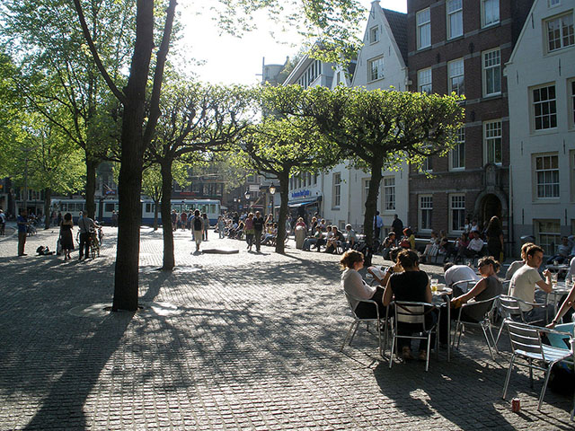
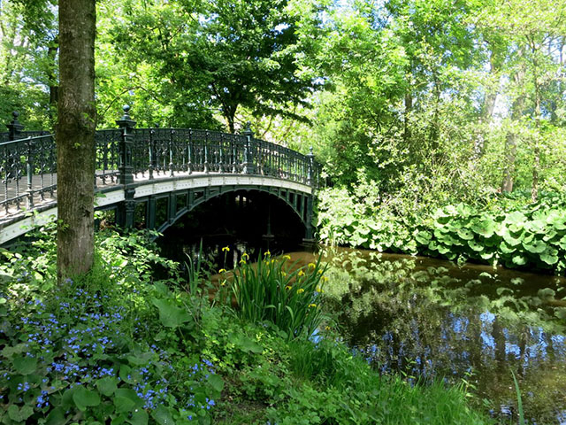
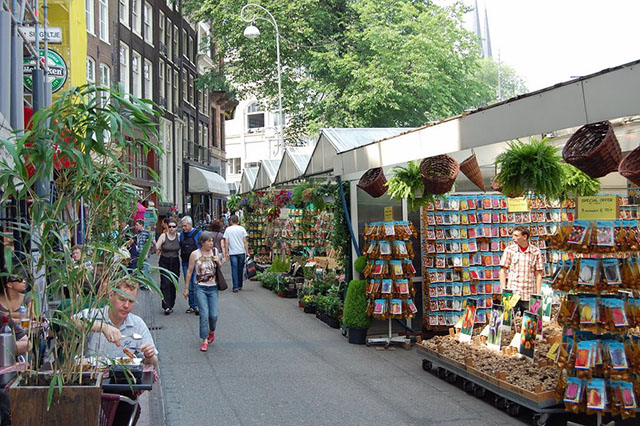
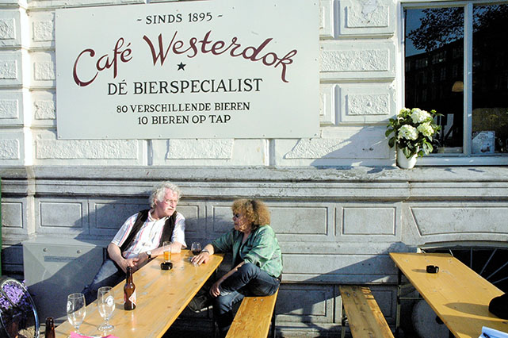
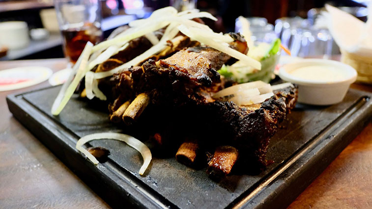
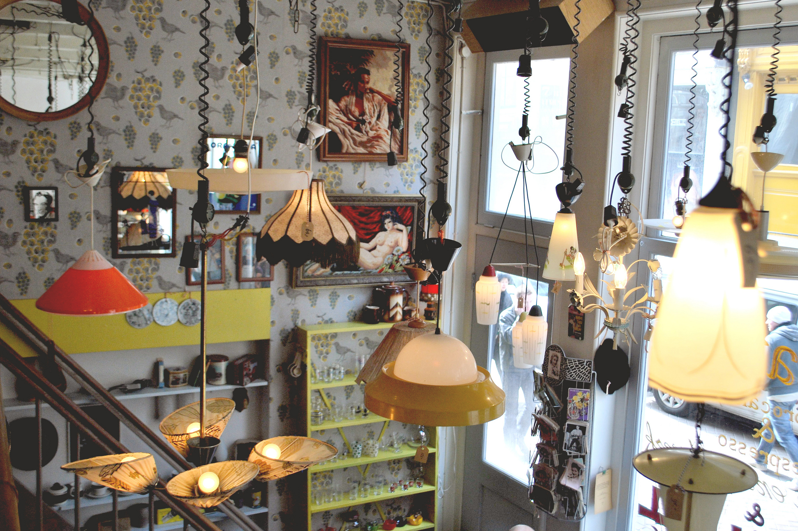
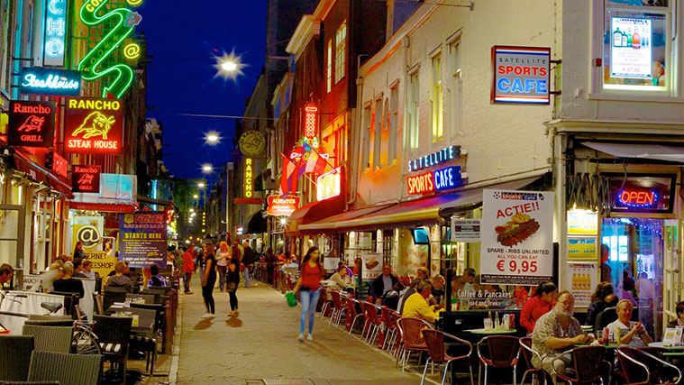

Plaça Dam
Aquesta és la plaça més reconeguda d'Amsterdam, per la gran afluència de turistes, entre altres coses, en estar envoltada de monuments històrics, que fan sens dubte, un lloc gairebé obligatori a visitar, a més de tenir una arquitectura molt cuidada. Una de les curiositats de la plaça, és la gran quantitat d'esdeveniments històrics que s'han produït en ella, la qual cosa ha derivat en els monuments que se segueixen conservant en l'actualitat.

Plaça Spui
La plaça Spui no congrega tant com la Dam, però encara i així té un gran al·licient que atreu els turistes, els mercats de l'art i la literatura, cada setmana es posen a la venda obres literàries i artístiques, els divendres estan dedicats a la venda de llibres, en els quals es troba una gran quantitat d'ells, pots arribar a trobar llibres en anglès, o fins i tot, amb molta sort, en castellà. Mentrestant, els diumenges són dedicats a la venda d'obres d'art.

Vondelpark
Vondelpark, és el parc més ampli d'Amsterdam, i el més reconegut del país, de fet, fa poc es va fer un estudi, en el qual es va calcular que cada any, arriben més de 10 milions de visitants. En ell es poden trobar centenars d'espècies vegetals, i animals que fins i tot poden arribar a interactuar amb els visitants, popularment és anomenat com el pulmó verd. A l'estiu s'organitzen concerts i obres de teatre, a l'aire lliure, Una de les seves activitats amb més afluència.

Mercat de flors
Si hi ha alguna cosa en especial que apassioni als holandesos són les flors, tant que hi ha mercats en els quals es ven únicament flors, de tot tipus, més conegut com a Bloemenmarkt. Resulta ideal per buscar una fotografia acolorida, a causa de la gran varietat que es pot trobar en aquest mercat. Una de les curiositats d'aquest mercat és que es troba surant a les ribes del canal Singel.

Cafè Westerdok
La primera impressió que et dóna en entrar a aquest lloc, és que no sembla haver estat dissenyat amb anterioritat, manca de concepte, tema o estètica, ni tan sols resulta atractiu des de l'exterior. Però no obstant això, si ets un fanàtic de la cervesa, desitjaràs trepitjar aquest cafè al més aviat possible, ja que conté ni més ni menys que 70 tipus de cervesa, per als holandesos aquest és l'encant més gran d'aquest lloc, i el que ho ha fet mantenir-se tants anys en peus. A més, ocasionalment s'organitzen nits de música en viu, amb diferents bandes i artistes de la ciutat.

Cafè de Klos
Replet de mobles de fusta massissa, panells de fusta, imitacions de quadres d'artistes holandesos, aquest cafè, malgrat que no és dels més carismàtics, és conegut per la seva carn rostida de tot tipus, amb enormes proporcions, ja sigui d'unes quantes costelles, pollastre, rellom o xai, comptat i debatut, és un bon lloc per venir amb gana.

Cafè Latei
Arribem a Latei, un lloc d'allò més original, amb una decoració desordenada, però alhora creativa, acollidora, i amb un toc retro. En ell se serveix especialment menjar orgànic, simple però de bon gust, des d'un entrepà, a un pastís de poma d'allò més saborosa, a més, el menú canvia constantment. Un dels detalls més curiosos, pels quals destaca aquest cafè, és que tot el que hi ha en el seu interior està a la venda, des de cadires, llums, accessoris de les taules, i en general, tot el que et puguis imaginar, sens dubte un lloc molt curiós.

Plaça Leidsplein
Una de les places més animades de tota Amsterdam, sens dubte és la Leidseplein, en aquesta plaça podem trobar des de bars, restaurants, discoteques, cinemes i teatres, així com el Casino d'Holanda, però a més de tot això, mentre la gent passeja, artistes llistes de carrers ofereixen els seus espectacles, tals com a malabarisme, manyagues, músics... a més, entre altres curiositats, tenim les partides d'escacs que es realitzen en taulers gegants, una altra d'elles la podem trobar recorrent la plaça, en la qual descobrirem diverses joies arquitectòniques, entre elles l'American hotel, dels hotels més exclusius de la ciutat. També podem trobar una gran quantitat de tendes de moda.